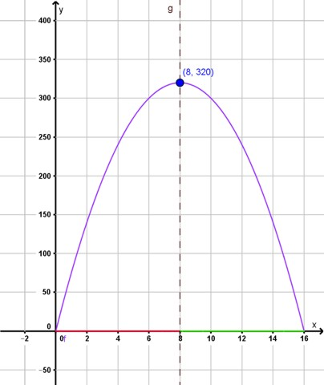
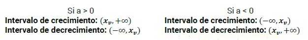

Intervalo de crecimiento y decrecimiento
Otra pregunta que nos planteamos es: ¿Cuánto tiempo tarda la señal para alcanzar el punto más alto? ¿Cuánto tarda para caer al suelo?
En la gráfica del problema podemos observar que para ciertos valores de la función, a medida que avanza el tiempo, la altura también crece. Esto sucede hasta que llega al punto máximo (vértice) y luego, a medida que sigue avanzando el tiempo, la altura comienza a decrecer.
Desde las coordenadas (0,0), la altura crece hasta la coordenada (8,320). Después de este punto, hasta la coordenada (16,0), comienza a decrecer.
Por lo tanto, podemos decir que desde el momento inicial hasta alcanzar el punto máximo tarda 8 segundos y también tarda 8 segundos en alcanzar el suelo nuevamente.
A estos intervalos de valores del dominio de la función donde las imágenes crecen y decrecen los llamamos intervalos de crecimiento y decrecimiento.
Diremos entonces que la función crece en el intervalo (0,8) y decrece en el intervalo (8,16).

De manera general, para una función cuadrática podemos decir que los intervalos de crecimiento y decrecimiento estarán determinados por el eje de simetría y por el signo del coeficiente principal de la función:

Obra publicada con Licencia Creative Commons Reconocimiento Compartir igual 4.0